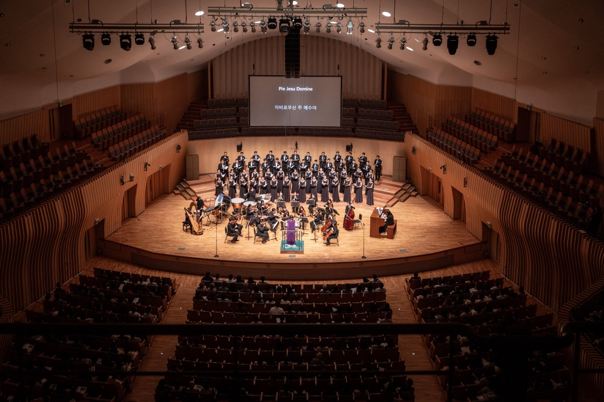
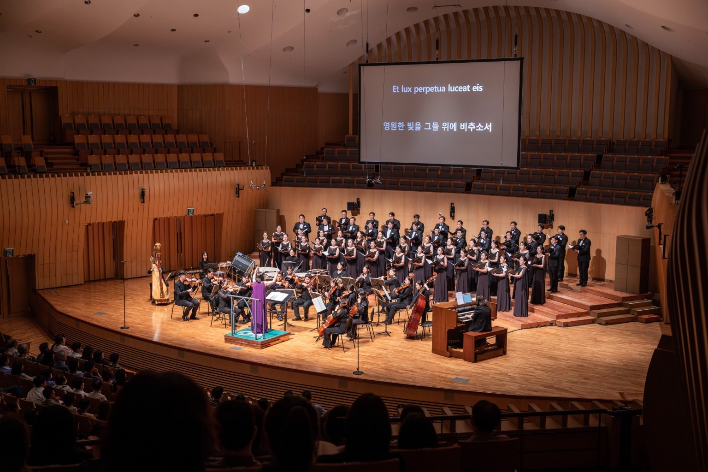
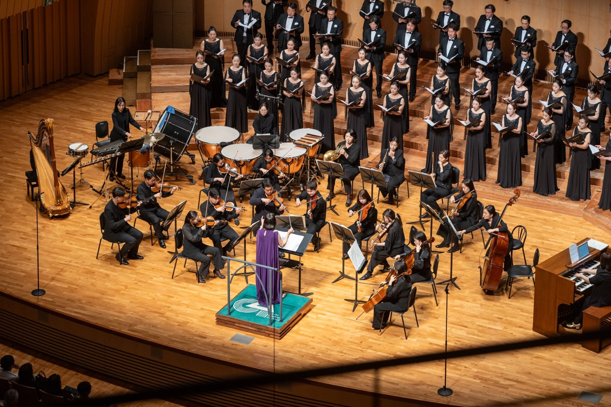
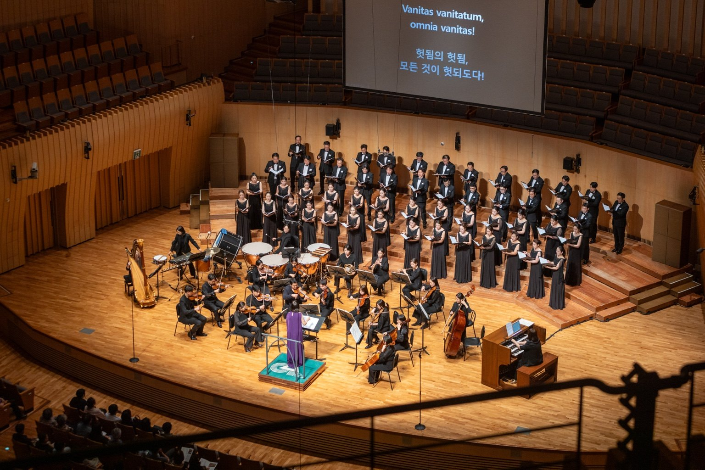

11 6月 2025 · 合作演出
Hope Sings Eternal
仁川市立合唱团第191届定期音乐会
- 日期
- 2025年6月11日 · 7:30
- 场地
- Arts Center Incheon · Concert Hall
- 客席指挥
- Pearl Shangkuan 博士
- 乐团
- Orchestra Lartife

演出介绍
仁川市立合唱团第191届定期音乐会以“跨越痛苦与绝望，再次绽放的希望”为主题。Orchestra Lartife 参与 Samuel Barber《Agnus Dei》、Dan Forrest《Requiem for the Living》等作品，呈现合唱与管弦乐交融的深邃而宏大的声音。
精选曲目
曲目
Z. Randall StroopeThe Lamentations of Jeremiah
Samuel BarberAgnus Dei · Adagio for Strings, Op.11
Josephine PoelinitzCity Called Heaven
Alice ParkerHark, I Hear the Harps Eternal
Dan ForrestRequiem for the Living
演出档案
演出图片



原版节目册
查看 PDF ↗